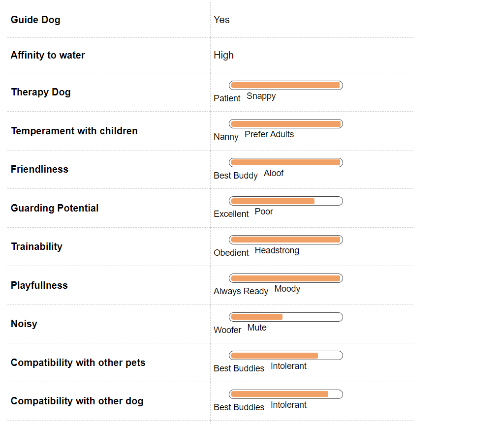
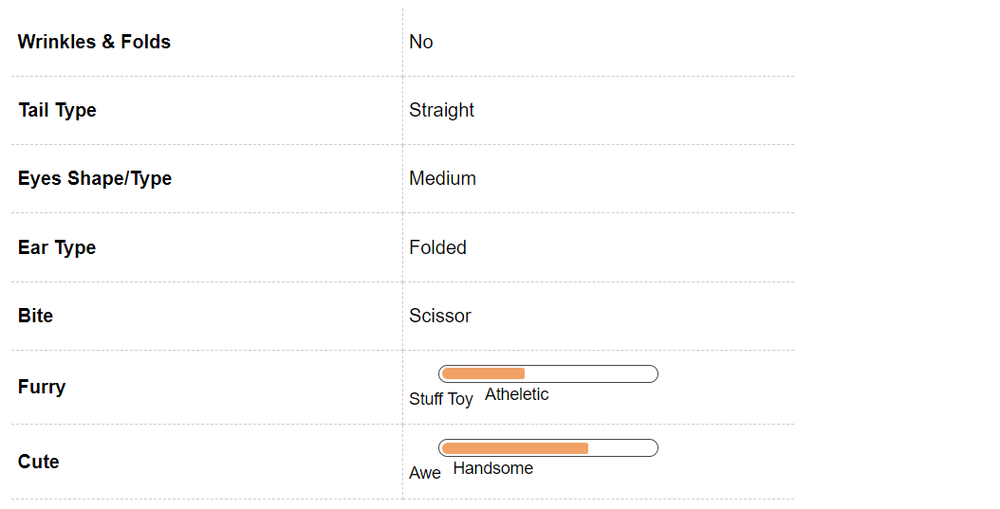

Labrador Retriever Dog Breed Information
Introduction
It will not be wrong to say that Labrador retriever is one of the most loved breeds around the world. You would have been a part of the life journey of this adorable pooch in Marley and Me.
There is no escaping the coy eyes and the innocent look of this breed. This is one of the most intelligent breed.
The breed is easily trainable and makes a perfect family dog. Our aim here will be to help you understand them better and make it a lifetime experience for you.
This is a big but extremely friendly dog, it at times may not be kind to strangers though. Labrador Retrievers have come to known as Lab fondly over time.
It is one of the most common options for a breed around the world when you are considering keeping a pet. They are extremely fond of children and love to make people around them happy.
There happiness can be at times infectious in the family. If you are looking for a pet for your family, look no further they are the perfect dogs to welcome to your family.
History
This handsome and playful dog owes its origin to the fisherman’s of Canada. The Labrador Retriever was created in Newfoundland by the fishermen to bring home their nets from the icy waters of the Labrador Sea.
They wanted to create a dog that loved the water and could easily wade in and out of it. The name Newfoundland was already taken so the name Labrador was given to them after the sea in which they worked. It was from Canada that these adorable and versatile breeds were brought to England in 1903.
Unique Aspects
Labradors are one of the best family pets. They love water; this breed was specially designed to wade through it. They have a distinctive otter like tail, which is dense to ensure an easy passage in and out of water.
There have an oily coat, which helps to repel water. They have been given an especially soft mouth that helps them to even hold a raw egg without breaking it, perfect for retrieving the fragile fishing nets from the water.
The Labradors have been given strong haunches to leap into water. They even hold a record of 27 feet. They are one of best guide and drug sniffing dogs. This can be a great pet for any first timer dog timer.
They are not temperamental and there superior intelligence makes them a loved breed all around the globe.
Fun Trivia

Labrador Retrievers as their counterparts are one of the most featured breeds in movies and have caught the fancies of many celebrities around the world. In addition to this they have been celebrities in their own right as well. There are various police and rescue dogs that have saved the lives of many.
Here is a small list of movies and celebrities that you share your pet with among many.
Movie Character
There are numerous movies that feature a Labrador Retriever, you might be able to think of many where they have snippet roles. Here is a list of some of the big time movies that feature them as protagonist.
This includes the recent movie Marley & Me, Big Barn Farm and Family Guy the animated show on TV has Brain as a Labrador.
Celebrity Labrador Retriever owners
There is a list of celebrity Labrador Retriever owners, the list includes Emily Blunt, Anne Hathway, Irina Shayk, Martha Stewart, Selena Gomez and Charlize Theron who are the proud owners of the Labrador Retrievers. Bollywood stars Shreyas Talpade, Shaimak Dawar, Shreya Ghosal owns a Labrador Retriever.
Even King Khan was smitten by this and had a pet called Hulk.
Vital Stats:
Dog Breed Group:
Gundog
Height:
21-24 Inches
Weight:
55-80 pounds
Life Span:
13 to 14 years
Pros and Cons
| Pros |
Cons |
|
Excellent family pets |
Need regular exercise to maintain weight |
|
Can adapt to all weather |
Shed a lot need grooming
|
|
Easy to maintain |
|
Labrador Retriever Maintenance & Effort
Grooming
The Labrador Retriever has a double layer slightly oily coat that helps to repel water easily. The adult lab has a slightly hard coat, whereas if you have a puppy then it will have a soft coat, which will not require much brushing but over time there will be harder outer coat that will develop.
The Lab will also need regular brushing if you do not brush the undercoat on a regular basis then soon your clothes will have hair all over it. If you constrained for time then you can brush your pet a minimum of one or two times in a week. Just use a natural or nylon brush.
This will help your lab to stay clean and also help to remove dead fur from underneath. If you brush your pets coat on regular basis it help to stimulate all natural oils present in the skin and make his or her coat glisten.
This Retriever group is prone to eye problems, which lead to blind spots. Check it on regular basis for any straining or irritation.
Labrador Retriever Hair & Coat
Labrador Retriever Health & Care
Common Health Issues
Labradors need a lot of space to run. These are high level activity dogs. They are sprinters they can hit a speed of 12 miles per hour within three seconds. The lab is robust in nature but they are prone to some health issues.
One of the most common is hip dysplasia a common joint problem associated with this large active breed dogs. You have to ensure that your pet gets a lot of exercise.
You Labrador Retriever has a high chance of developing an eye defect as well, which has been caused genetically in them called the retinal dysplasia. This causes blind spots in them.
These dogs are primarily athletes and as any another athlete they are prone to problems of the knee and the elbow. If you observe any problem then just take them to a vet. They are in general very healthy and easy maintenance dogs.
There are some lineages that have shown signs of epilepsy or seizures. This will surface fairly early in your dog. It can be treated with proper medication but if your dog is prone to such problems just take care that he or she does not hurt themselves while having a seizure.
Labrador Retriever Behavior

Temperament
Labrador Retrievers as all other retrievers are one of the most versatile and docile dogs. That dog breed are extremely friendly with family members and are great with kids.
This makes them the perfect pet for your family. They are fun and extremely loyal for the family. If you have kids at home then the lab will be one of the most reliable pets and will guard them against all intruders.
Those of you who already have them at home would have witnessed this at home or the playground. If you have a water body nearby then they will love to play in water, their web feet and otter tail allow them to wade through water easily.
Give this breed plenty of exercise and he will be happy. These are high activity level dog and needs to be exercised on regular basis to keep a check on the weight.
Environment
The Labrador Retriever is a very active breed and loves to please their family members. They adapt wonderfully to the cold environment but do well in summer as well.
This is a very versatile breed, if you live near any water body then this breed will love to play in water. They were bred to retrieve nets from the ice cold water of the Labrador Sea and they have retained their penchant for the cold water.
The labs adapts well to the apartment life as well but remember that he or she will need a lot of exercise. They love to run, if you have a lab at home then you will be well aversed to how fast he or she gains weight.
Then this may a result of lack of exercise. They are sprinters in their rights if you remember.
Training & Intelligence
Labradors as a breed are one of the most trainable dogs to be kept as a pet. They are high on intelligence and are versatile. They blend with your family easily and are compatible in almost any environment.
They can be trained to do a variety of things. They can excellent guide dogs, sniffer dogs and even help to provide assistance in mobility for their pet owners.
It is a general observation that black Labradors are most successful in all dog shows, the golden color are mostly used as sniffer dogs to look for explosives and drugs. The brown is the most uncommon color.
The breed in general is very intelligent and can learn various new tricks very easily. You can start training your puppy but if your dog has grown then also he can be trained.
It is never too late for your Labrador retriever to start his training. They are quick learners and can be easily trained with help of treats.
Always start with the basic dog training with commands such as stay, sit and down. This is an intelligent dog breed and learns to adapt quickly. The best way to train them will be with the help of treats, this breed loves to acknowledge for its behavior.
Labrador Retriever Breeding
Procreation
The Labrador Retrievers is one of the easiest breed to manage. They are adorable as puppies and grow up to friendly and handsome dog.
This breed does not have much problem when it comes to breeding. The only thing you have to think about is giving the adorable puppies up for sale or adoption.
An average male and female Labrador attains sexual maturity anywhere between six to nine months of age. Though you puppy is still very young to breed now.
A dog takes around 18 months to reach his full height and structure. It is advisable to breed your dogs after at least two years of age.
If you are first timer at breeding then taking a vets care is advisable. You just sit back and enjoy the company of six to nine adorable little puppies. An average litter size in the breed.
There is a general belief that golden puppies come from golden Labradors and the same applies for chocolate and black. It is possible to have all the colors in the same litter.
Puppies
Labrador retrievers are happy go lucky dogs right from their being a puppy till they attain adulthood. This puppy can prove to be quiet a handful with its antics and playfulness.
The Labrador can be very mouthy and it has to be trained at a younger age to not bite as this breed is easily trainable.
You will not have any problem in training him or her for the same. This puppy will love to chew so remember that it has to be trained in the beginning only to not chew on your prized furniture or upholstery.
Labrador Retriever Appearance

Body
An adult Labrador Retriever is extremely well built with a deep broad chest. It has a short level back and wide loins. One of the most remarkable features of your Labrador is an excellent and superior nose.
They make amazing sniffer dogs because of this feature. In both the world war, they were used to detect mines. Their amazing nose still makes them a favorite with the armed and police forces to sniff drugs and ammunition.
The average lifespan for this breed is around 10 to 12 years. It has forelegs, which are straight from the elbow and have powerful hindquarters.
The intelligence and friendliness of this pet is reflected in their medium sized brown or hazel eyes, which always carries a friendly expression. It has a broad skill and medium to long shape muzzle.
The Labrador retrievers has easy to maintain ears, they are not long or heavy. They hang close to the head rather than being set back and low. They are equipped with a distinct otter type till, which is thick and covered with fur. It is thick in root and then tapers. This helps them to swim in water easily without any hassles.